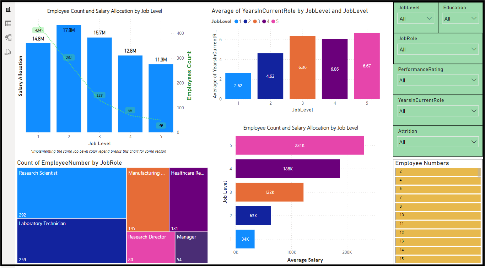
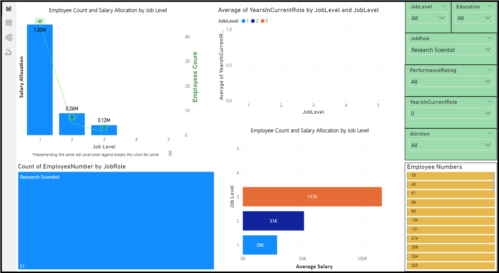
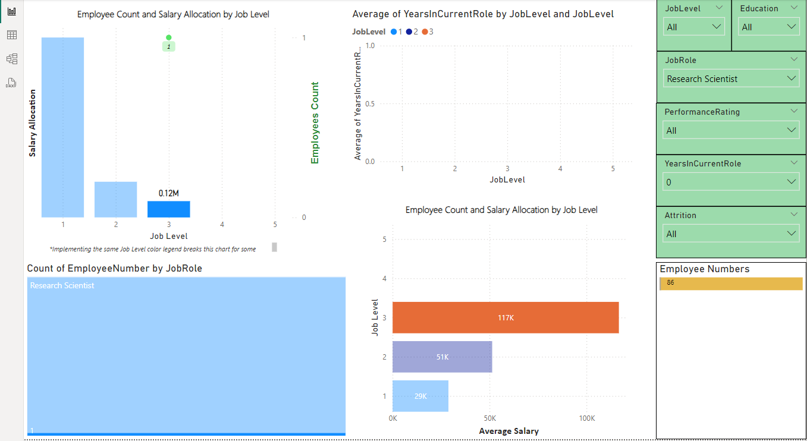

HR Reporting & Insights
Work-in-progress
How can employee attrition be reduced based on survey and background data?
Objective: Build a robust HR-Driven dashboard with several functionalites. One, include pages focused on end-user tracking and reporting. Two, include pages focused on generating insights aimed at reducing employee attrition.
Key Takeaways:
Research and Development Department Overview
Our first report page provides a general reporting overview of the Research & Development department of our company. It is built as a user-end interactive dashboard in which anyone within HR can use easily use the various filters on the right-hand-side to obtain the information they're looking for. More specifically, this dashboard was built to easily provide a breakdown involving any of following varialbes and their interconnected relationships: Job Level, Job Role, Years in Current Role, Salary, and Employee (Identification) Number.
As a use case demonstration, suppose you wanted to gain an understanding on newly hired (0 years in current role) Research Scientists. By using the filters on the right hand side, you'd be easily to quickly generate all the following information on newly hired Research Scientists.
After applying the filters, we could easily see that:
1. We currently have 51 newly hired Research Scientists (bottom left)
2. Of those 51 employees, 45, 5, and 1 of them possess the Job Levels 1,2, and 3, respectively (top left)
3. The average salary in accordance with Job Level are 29k, 51k, and 117k, respectively (bottom right)
A notable observation that easily comes to light within this filtered page is that we have exactly one Job Level 3 Research Scientist in which we are paying over double in salary than research scientists the previous Job Level. Power BI allows us to easily dig further into this individual or any individual for that matter (also known as drill-down), as we should make sure all of our salary outliers are entirely justified.
From the drill down, we can easily see that the employee in question is employee number 86 (very bottom right). Now knowing the employee number, we can now use our second report page to obtain all the key background and performance related information which serve to justify this outlier salary.
*Employee Performance and Assessment Page In-Progress